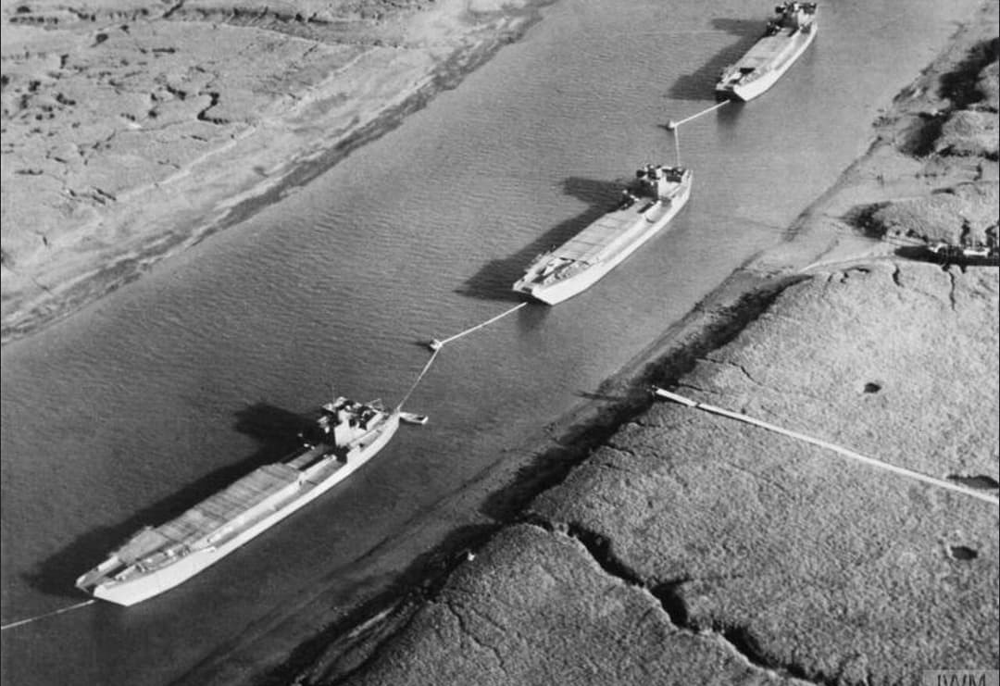
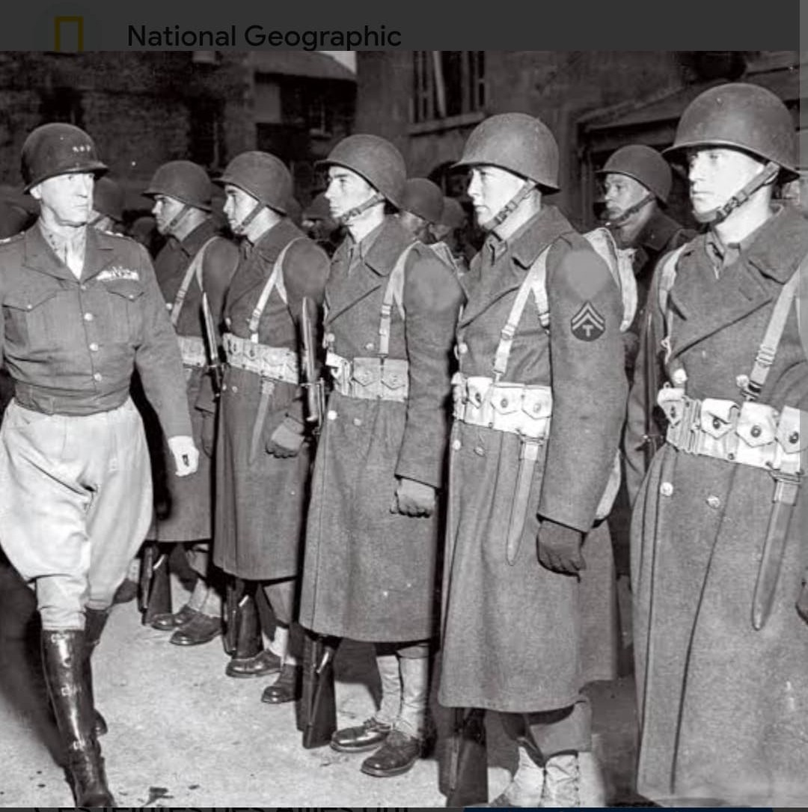
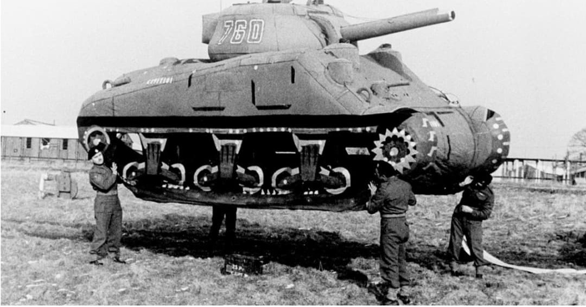
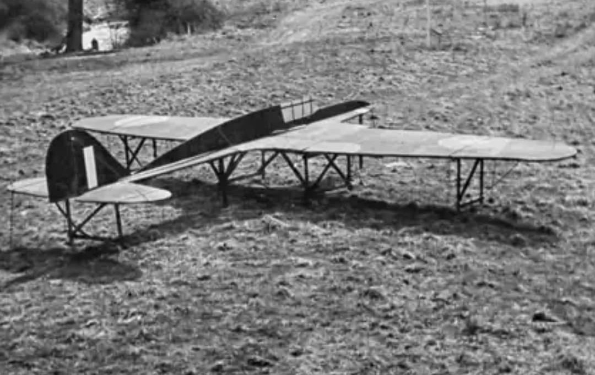
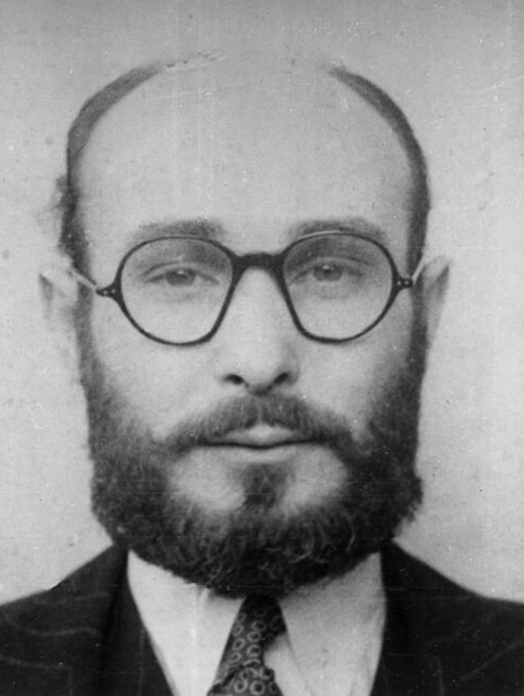

L’Opération Fortitude est l’une des plus grandes opérations de tromperie de la Seconde Guerre mondiale. Mise en place par les Alliés en 1944, elle vise à convaincre le haut commandement allemand que le débarquement aura lieu dans le Pas-de-Calais, secteur le plus fortifié du Mur de l’Atlantique, et non en Normandie.
Cette opération est essentielle : elle permet de détourner les forces allemandes du véritable lieu du Débarquement, facilitant la réussite d’Overlord.

Au cœur de Fortitude se trouve la FUSAG (First United States Army Group), une armée entièrement fictive prétendument commandée par le général George S. Patton. Les Allemands considèrent Patton comme le meilleur général allié : le placer à la tête d’une fausse armée renforce la crédibilité de la tromperie.
Cette armée “stationnée” dans le sud-est de l’Angleterre semble se préparer à envahir le Pas-de-Calais, face à Boulogne, Calais et Dunkerque.

Pour rendre la FUSAG crédible, les Alliés installent des chars gonflables, des fausses batteries d’artillerie, des fausses barges de débarquement, des fausses stations radar et des camps factices.
Les avions de reconnaissance allemands photographient ces installations et les prennent pour de véritables préparatifs d’invasion.

Les Alliés créent des milliers de messages radio simulant des mouvements de troupes, des ordres logistiques, des demandes de carburant et des transmissions d’état-major.
Ces messages sont volontairement interceptés par les Allemands, renforçant l’illusion d’une armée massive prête à attaquer le Pas-de-Calais.

Des espions retournés jouent un rôle crucial dans Fortitude. Le plus célèbre est Garbo (Juan Pujol), qui transmet aux Allemands des informations fausses mais crédibles, confirmant un futur débarquement dans le Pas-de-Calais.
Grâce à ces agents, les Allemands sont persuadés que la Normandie n’est qu’une diversion.
Le 6 juin 1944, lorsque les Alliés débarquent en Normandie, Hitler refuse d’envoyer ses meilleures divisions en renfort. Convaincu par Fortitude, il pense que le véritable débarquement aura lieu dans le Pas-de-Calais.
Cette erreur stratégique permet aux Alliés de consolider leur tête de pont et de percer les défenses allemandes, contribuant directement au succès d’Overlord.
L’Opération Fortitude est l’une des plus grandes réussites de la guerre psychologique. Elle démontre que la stratégie, la ruse et la désinformation peuvent être aussi puissantes que les armes.
Sans Fortitude, le Débarquement aurait été beaucoup plus difficile, voire impossible.